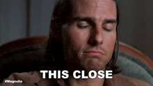
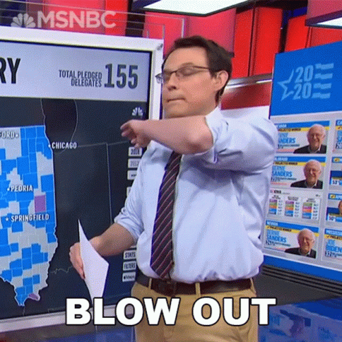
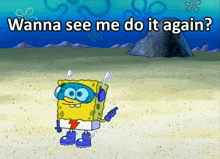
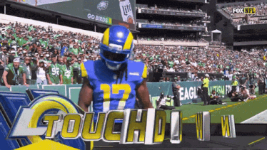
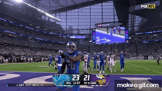
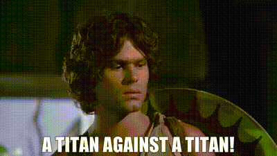
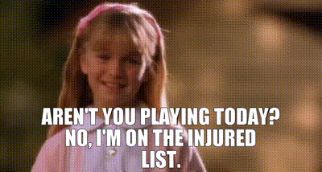
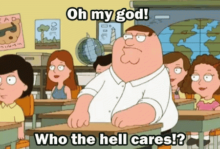
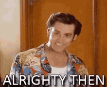

Published every Tuesday because Monday you're all still crying
Straight from the league's own standings page — AFC and NFC divisions, with playoff odds attached
| Rk | AFC | Record | Streak | Playoff % |
|---|---|---|---|---|
| 1 | MaHOMELANDER | 2-0-0 | W2 | 86% |
| 2 | Covfefe is for Closers | 1-1-0 | L1 | 86% |
| 3 | Hurt Me Moore | 1-1-0 | W1 | 68% |
| 4 | Nabers ate my Zombies | 1-1-0 | L1 | 62% |
| 5 | Waddle On Deez Nuts | 0-2-0 | L2 | 35% |
| Rk | NFC | Record | Streak | Playoff % |
|---|---|---|---|---|
| 1 | Kenz VishusLicks | 1-1-0 | W1 | 50% |
| 2 | Sutton My Face | 1-1-0 | W1 | 62% |
| 3 | Texas Determined Domination | 1-1-0 | L1 | 61% |
| 4 | Catchy Football Name | 1-1-0 | L1 | 54% |
| 5 | Donuts All Day 24/7 | 0-2-0 | L2 | 37% |
Playoff odds courtesy of the platform's own model, not ours. MaHOMELANDER and Covfefe are both sitting at 86% two weeks in — everyone else has real work to do. Sutton My Face leads the league in waiver moves with 5 already; Hurt Me Moore isn't far behind at 4. MaHOMELANDER and Catchy Football Name are the only teams that haven't touched the wire at all.
| Team | PF | PA | Home | Away |
|---|---|---|---|---|
| MaHOMELANDER | 559.9 | 444.9 | 1-0-0 | 1-0-0 |
| Hurt Me Moore | 566.9 | 527.0 | 0-0-0 | 1-1-0 |
| Covfefe is for Closers | 546.1 | 530.3 | 1-0-0 | 1-0-0 |
| Kenz VishusLicks | 456.3 | 485.8 | 0-0-0 | 1-1-0 |
| Nabers ate my Zombies | 467.4 | 469.0 | 1-0-0 | 0-1-0 |
| Sutton My Face | 421.4 | 365.5 | 0-0-0 | 1-1-0 |
| Texas Determined Domination | 406.8 | 466.4 | 1-1-0 | 0-0-0 |
| Catchy Football Name | 389.9 | 443.8 | 0-1-0 | 1-0-0 |
| Waddle On Deez Nuts | 465.2 | 536.4 | 0-2-0 | 0-0-0 |
| Donuts All Day 24/7 | 444.6 | 455.3 | 0-1-0 | 0-1-0 |
Waddle On Deez Nuts has allowed the most points against in the league (536.4) despite scoring plenty themselves — that's not bad luck, that's a defense-optional roster. Sutton My Face has given up the fewest (365.5), for whatever that's worth on a 1-1 team.
The rematch of the optimizer game, and it was somehow even closer
Josh Allen dropped 69 points — sixty-nine — and Alby STILL lost. That's back-to-back weeks now where his QB goes nuclear and it isn't enough, and this time the culprit was the other quarterback: Justin Herbert managed just 19.15 against a 38.9 projection, nearly cutting his number in half. Add a bench Dalton Schultz sitting on 33.5 unused points while Jameson Williams started and bricked for 7.3, and Alby basically hand-delivered this loss. Covfefe, meanwhile, needed Jaxon Smith-Njigba (53.25) and Tyler Shough (44.45) to bail out a Trevor Lawrence bust (16.5) and a full Saquon Barkley no-show (5.0) — David's 2-0 now, but this roster is held together by duct tape and whoever happens to go off that week, not by whoever he actually started to win with. Maybe it's time for Alby to detach his mouth from Josh Allen's cock and trade him for some skill positions to help his pitiful team.

A team named after Malik Nabers just watched Malik Nabers put up 2.1 points, and Caleb Williams' hamstring blew up, landing him only 16.8 against a 37.9 projection. JJ never had a chance. On the other side, Jared Goff went off for an absurd 59.5 points at OP, Amon-Ra St. Brown added 42.95, and Jalen Hurts chipped in 39.8 — Hurt Me Moore hit their own projection to the decimal (261.5 proj, 261.45 actual) and it still looked like a massacre. Second-highest score in the league last week in a loss, and one of the highest scores in the league this week in a win — Joydip's team finally cashed in. Perhaps spending 55$ in FAAB for a guy (who also had NOBODY bidding on him) that gets outscored by your dropped QB isn't the best way to manage your team, but what do I know.

This wasn't close. McCarty's entire roster collapsed at once — Jayden Daniels went flamingo-armed again (25.85 on a 39.9 projection), Justin Jefferson (11.0 on 23.3), and worst of all Drake Maye, who put up 17.9 points at OP against a 37.7 projection. Less than half. The only things that showed up were Garrett Wilson, Tyler Warren, and a Steelers D/ST that outscored Maye by himself. Sutton My Face didn't need to be great to win this by 62 — Ryan just needed to not implode, and even with Courtland Sutton busting again for 7.0 points (the man's own tribute team can't catch a break), it was academic by the second quarter.
Both quarterbacks in Kevin's stack went off at the same time — Patrick Mahomes for 58.9, Brock Purdy for 51.7, a combined 110.6 points from two guys who are only ever going to start one game at a time for most teams. That's absurd enough to win most weeks by itself. What's almost funnier is that Lucas actually beat his own projection by 46 points on the other side — Dak Prescott dropped 58.7, and Waddle, Olave, Kittle, and Kelce all overperformed across the board — and it still wasn't enough. Two teams combined for over 535 points in one matchup and one of them still walked away 0-2.

Remember Ken's "museum of bad value" reputation from the draft? Matthew Stafford just dropped 54.0 points and Bryce Young — the waiver pickup that replaced Kyler Murray's 0.65-point disaster two weeks ago — added 45.2 more. Throw in a 46.5-point Davante Adams game and this roster finally cashed every check it wrote on draft day. Kolby's side lost its best asset for real reasons this time: Jaxson Dart, who bailed him out of a near-loss in Week 1 with 53.55 points, left this game early with a sprained left MCL and finished with just 1.75. Not a bust — an injury, and reportedly one that'll cost him multiple weeks. Lowest score of Texas Determined Domination's season, and the reach-happy team everyone made fun of just posted the league's best week.

Early projections — subject to change as we get closer to Thursday kickoff
Projected: 187.1 – 210.2
McCarty's still digging out from that 162-point disaster last week, and now there's a real complication: Jayden Daniels dislocated his left elbow late in the first half against Dallas and was ruled out for the rest of the game. Washington's turning to Marcus Mariota with no firm return timeline for Daniels yet — worth confirming his roster status before lineups lock, though Drake Maye (39.89 proj) is still projected as McCarty's lead QB either way. JJ's favored by 23, with Jahmyr Gibbs (36.63) and Jordan Love (35.07) both projecting big — the Jordan Love pickup keeps paying off.

Projected: 246.4 – 269.9
Two of the highest scoring teams in the league finally colliding. David's leaning on Tyler Shough (38.24) and Trevor Lawrence (35.92) again — a combined 74 points projected from two guys sharing one roster spot's worth of value most weeks. Kevin's Purdy-Mahomes stack (41.76 + 39.28) is favored again, and after back-to-back weeks of both QBs actually delivering, there's no reason to bet against it yet.

Projected: 214.6 – 239.0
Kolby's dealing with a real problem this week, not just a bad game: Jaxson Dart is out with a sprained left MCL and expected to miss multiple weeks, with Jameis Winston taking over for the Giants. Joe Burrow (36.92 proj) is still the anchor here, but the Dart injury is worth a lineup check before Thursday. Alby brings back Josh Allen (43.75) and Justin Herbert (36.05) — the exact pairing that put up 88 combined points last week and still lost. If both hit again and Donuts still finds a way to blow this, it might be time to admit the problem isn't the quarterbacks.

Projected: 244.9 – 228.5
A rematch of the "who dumped their Week 1 QB disaster the fastest" storyline — Ryan's gone from Darnold to Bo Nix (35.91 proj) as his OP, while Ken's Bryce Young (34.96) is still riding the high of last week's 45.2-point outburst. Both teams sit 1-1 and division rivals; this one's basically a coin flip on paper, 16 points apart.

Projected: 254.4 – 213.3
Joydip's coming off the highest score in the league last week (Jalen Hurts + Jared Goff combined for nearly 100) and is favored by 41 here. Lucas is stuck in an odd spot — his roster has now beaten its own projection twice in a row and still sits 0-2, and even Lamar Jackson (40.67) leading the projections again might not be enough to break the streak.
